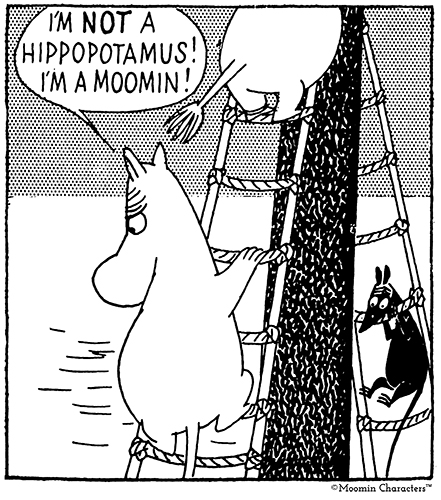
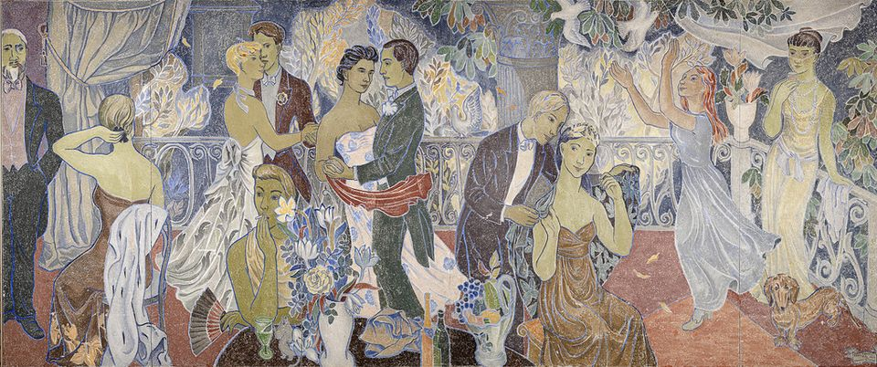

About Tove
Best known as the creator of the Moomins, Tove Jansson (1914 – 2001) was a Swedish – speaking Finnish cartoonist, painter, illustrator, graphic artist and writer. She was born in Helsinki in a Swedish family of artists – her mother a graphic designer and illustrator, and her father a sculptor. She studied painting both in Finland and abroad while working as an illustrator and drawing cartoons for satirical and political magazines before leaning into her love of nature, animals and changing seasons by charting the adventures of the tightly – knit Moomin family in series of 8 books.
Moomins
Moomins are a peace – loving philosophical family consisting of Moominmamma, Moominpappa and their son the Moomintroll + their many friends. Conceived in the 1940’s as a series of children’s books the Moomins are now a global phenomenon making their creator Tove Jansson one of the most succesful authors of children’s books of all time. Moomin books are very influenced by Tove’s own life, it doesn't take a genius to trace Mamma and Pappa Jansson in Moominmamma and Moominpappa or Tove’s partner Tuulikki Pietilä as Too – ticky.
Work outside Moomins
Although Tove is mainly known for her Moomin books she is also a polymathic artist, as brilliant with oils and acrylics as a black pen and a comic strip. Tove struggled for many years with her desire to be taken seriously as a painter rather than as an illustrator. Her best known paintings are the large frescoes made for Helsinki City Hall in 1947, the frescoes depict party scenes in countryside and city, in one fresco Tove has even painted herself sitting next to a little Moomintroll watching her lover dance with someone else.
My favorite Moomin books:
- The Moomins and The Great Flood (1945)
- Finn Family Moomintroll (1954)
- Moominland Midwinter (1957)
Tove's adult novels:
- The Summer Book (1972)
- Sun City (1974)
- The True Deceiver (1982)
- The Field of Stones (1984)
- Fair Play (1989)